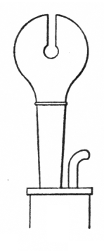
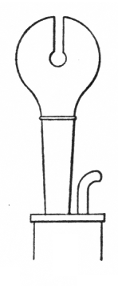

|
Knopfregal German |
A reed stop of the Regal class, so named because of the shapes of its resonators (knopf = �knob�), each of which consisted of a short cylindrical tube surmounted by a hollow globular or pear-shaped head in which a slot is cut, thus resembling a sleigh bell or, as Wedgwood describes it, a Gothic bishop's mitre. Irwin says that the resonators are seldom longer than 6", and describes the tone as �thin, brilliantly reedy, somewhat acid�, and less muffled than some other Regals. Adlung lists it as a synonym for Apfelregal. The illustration is Audsley's.
Knopfregal 8', Rückpositiv; Marienkirche, Stralsund, Germany; Stellwagen 1653-59. This is the only known example.
|
Original website compiled by Edward L. Stauff. For educational use only. Knopfregal.html - Last updated 1 April 2003. |
Home Full Index |